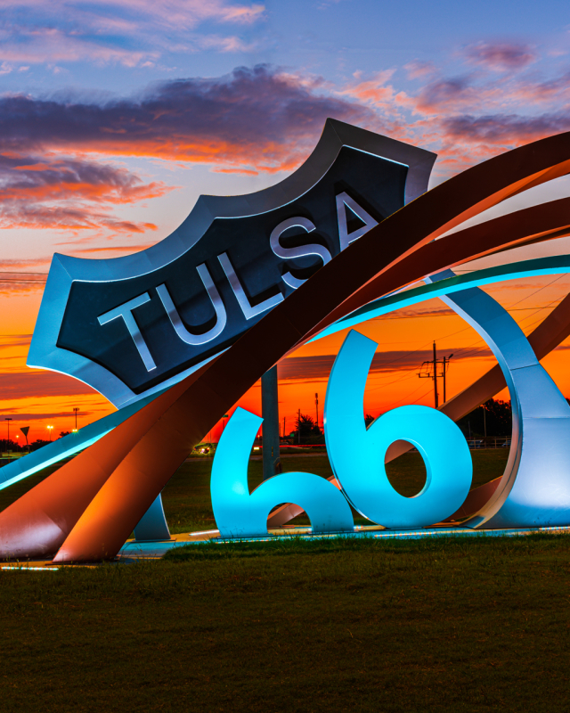

Tulsa
Tulsa is a vibrant city located in the state of Oklahoma. Here are some details:
Population: 412,000 (approx.)
Year Incorporated: 1907
Region: Northeastern Oklahoma
Classification: Urban
Average Income Level: $50,000 (higher than the state average)